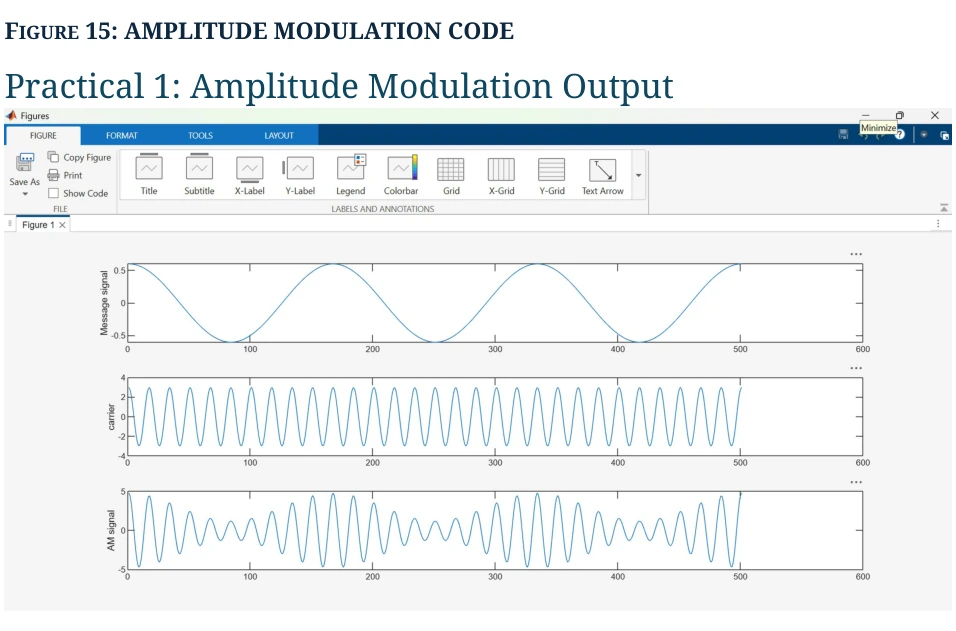
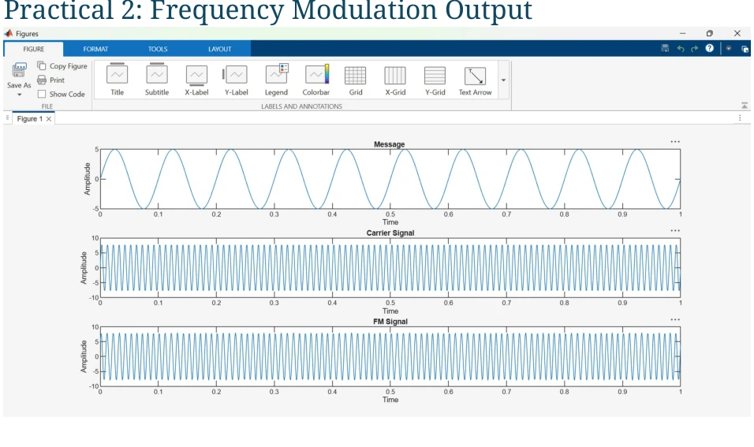
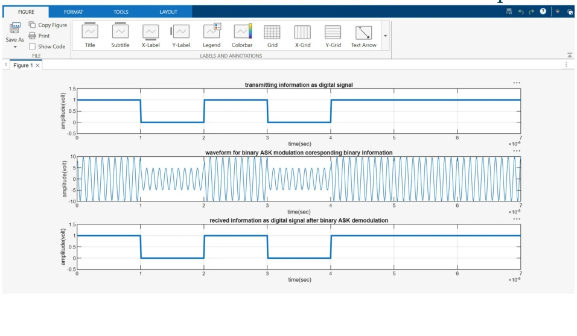
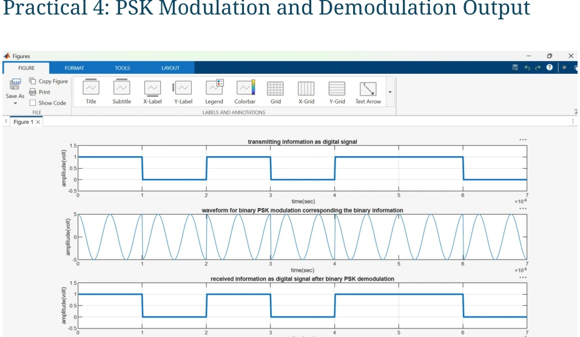
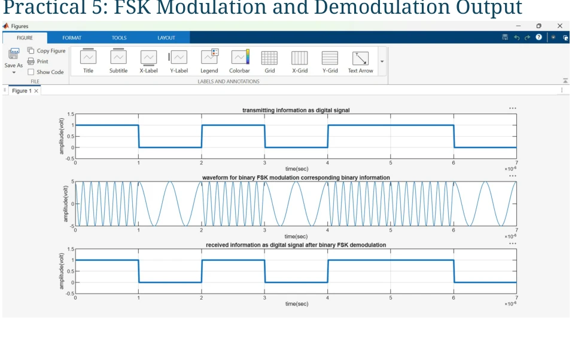
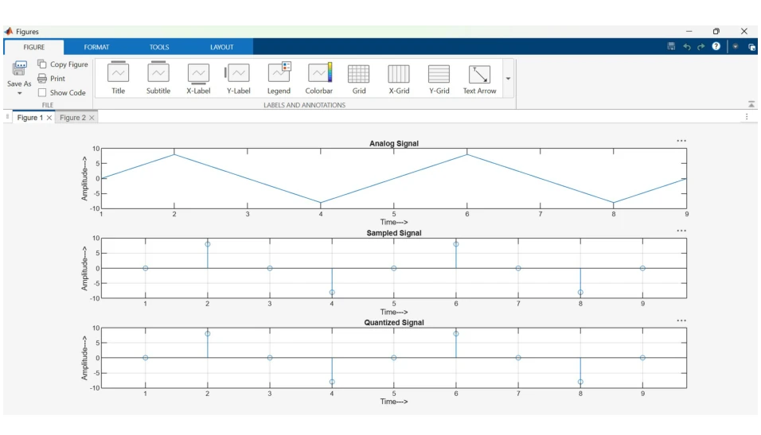
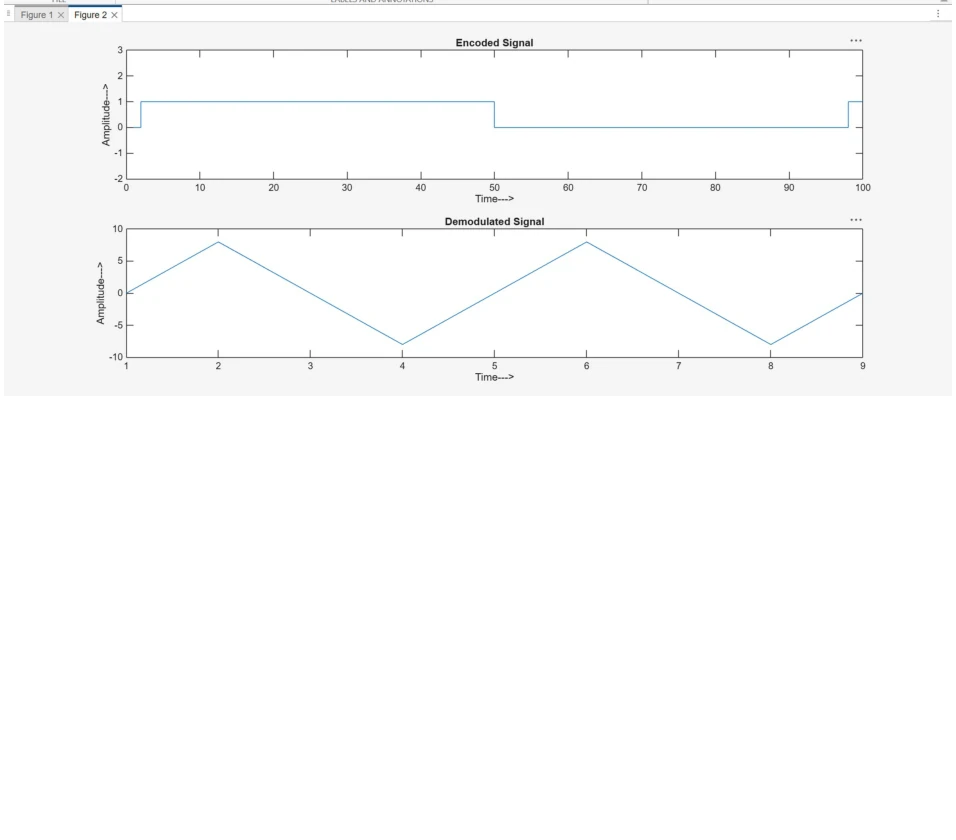

Analogue modulation
Amplitude Modulation (AM) and Frequency Modulation (FM) illustrate how a baseband message changes a high-frequency carrier to communicate information.
A collection of six MATLAB laboratory practicals exploring how information is carried through analogue and digital modulation. The documented experiments compare message signals, carriers, transmitted waveforms and recovered outputs.

The COM261S report begins with introductory MATLAB plotting, calculator and matrix exercises before presenting six signal-processing practicals. Each communication practical includes code screenshots and output figures. The emphasis is educational simulation and waveform interpretation, not a physically deployed radio system.
Amplitude Modulation (AM) and Frequency Modulation (FM) illustrate how a baseband message changes a high-frequency carrier to communicate information.
ASK, PSK and FSK encode binary symbols in amplitude, phase and frequency. PCM demonstrates sampling, quantisation, binary coding and recovered signal approximation.
Each thumbnail below is derived from an output screenshot in the supplied lab report. Select a practical to inspect its signal in the browser demonstration.

The information signal changes the amplitude envelope of a higher-frequency carrier.
Original figure from the submitted report
Explore interactive waveform →
The information signal changes the instantaneous frequency of a carrier while its amplitude remains approximately fixed.
Original figure from the submitted report
Explore interactive waveform →
Binary information controls whether a carrier is present. The reported exercise also displays the recovered bit sequence.
Original figure from the submitted report
Explore interactive waveform →
Binary symbols are represented by switching the carrier phase, with a recovered digital sequence.
Original figure from the submitted report
Explore interactive waveform →
Binary data is represented by alternating between two carrier frequencies.
Original figure from the submitted report
Explore interactive waveform →
An analogue waveform is sampled, quantised and encoded into binary values, then reconstructed as an approximation.
Original figure from the submitted report
Explore interactive waveform →The captured figures come from the uploaded 21-page report. They demonstrate the work as originally documented, while the interactive visualiser is an additional portfolio teaching tool.

.m source files were not supplied. The web demonstration is a new reconstruction of the general modulation principles, not a claim that the original MATLAB scripts run in the browser.This project belongs to Nnete Teise's Communication Systems 2 coursework supervised by Dr Gunjan Gupta. The uploaded report is the source of the displayed evidence; signal examples on the interactive page use illustrative values.